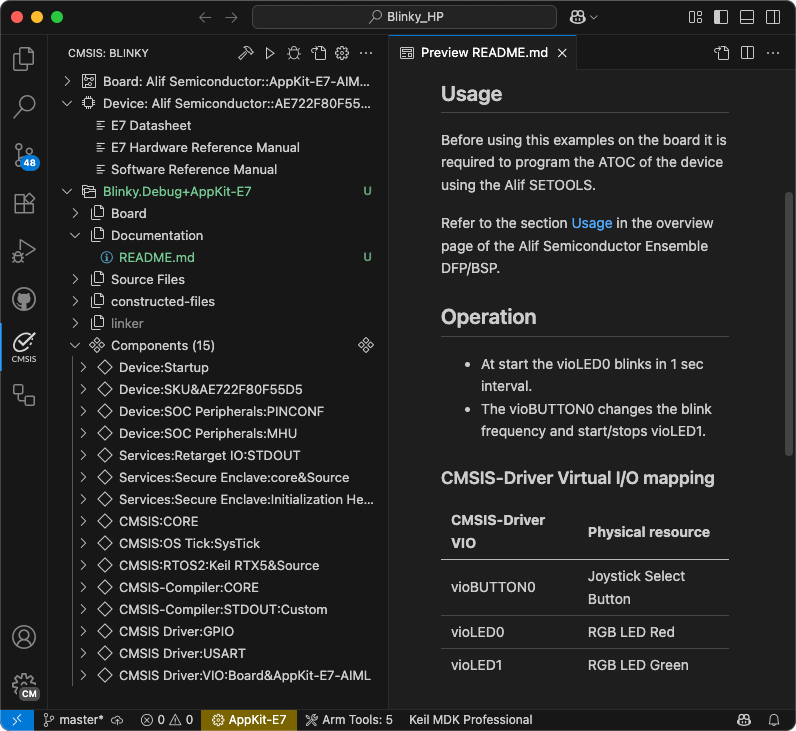
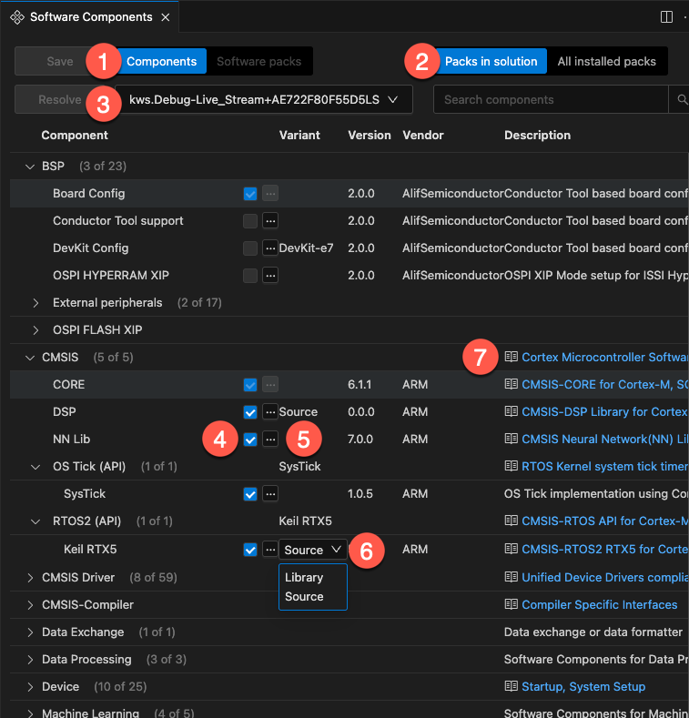
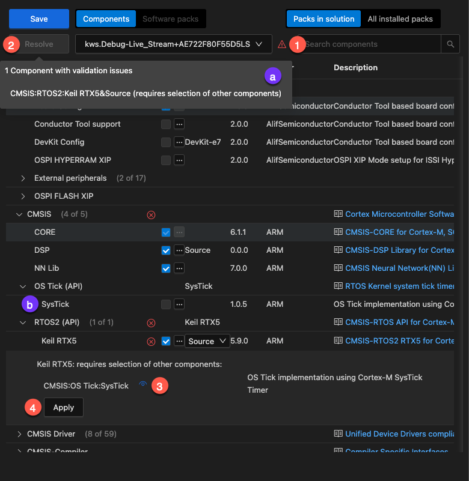
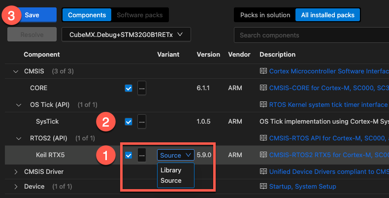

Work with CMSIS solutions
This section explains how to create a CMSIS solution-based project that is using CMSIS-Packs.
In the  CMSIS view, click Create a New Solution. If you already have a
solution opened, use the menu (...) item Create a Solution.
CMSIS view, click Create a New Solution. If you already have a
solution opened, use the menu (...) item Create a Solution.

The Create new solution dialog allows to start projects based on a Target Board or Target Device selection.
Examples, templates, and reference applications depend on the selected board or device and on installed CMSIS-Packs.
-
Examples are created for a specific hardware or evaluation board. These are typically complete projects that directly interface with board and device peripherals.
-
Reference applications use defined interfaces (APIs) and are therefore hardware agnostic. These projects require the installation of related CMSIS-Packs and additional software layers for an evaluation board.
-
Templates are stub projects that help you getting started. Some CMSIS-Packs may contain device-specific templates.
-
GitHub repositories may contain projects showcasing a specific use case. These repos can be cloned directly into VS Code. The Source Control view
 helps maintaining these repos.
helps maintaining these repos.
Further settings include:
-
The Solution Sub Folder is typically a sub-directory in your workspace.
-
The Solution Base Folder specifies your workspace location that may contain multiple projects.
-
With Initialize Git repository the related
.gitignorefile is created. -
Show project opening options allows you to open the solution a new instance of VS Code. By default, it is loaded into the current VS Code instance.
Examples
- Click the Target Board (Optional) drop-down list.
- Enter a search term tp filter the list and then select your board. The details of the selected board are displayed.
- Click Select.
Next, select the example project. There are two types of example projects (available either from Local packs and/or from the Web):
-
Csolution Examples are using Keil Studio's native project format.
-
uVision Examples are in
*.uvprojxformat and are converted automatically.
To verify the Keil Studio installation, select a Blinky project for example.
Specify a Solution Base Folder and click Create.
Note
First time users may need to confirm that the Arm Tools Environment Manager extension can automatically
activate the workspace and download the tools specified in the vcpkg-configuration.json file included in a
project.
A typical Blinky example includes a REAMDE.md file that contains valuable information about the hardware setup and
specific tasks that need to be done before working with the target board:

Continue to build the project.
Reference applications
Reference applications show the usage of middleware, software libraries, and custom code that can run on many different target hardware boards. Examples display only if you selected a board and a software layer is available for that board. Reference applications are not dependent on specific hardware. You can deploy them to various evaluation boards using additional software layers that provide driver APIs for specific target hardware. Layers are provided using CMSIS-Packs.
Reference applications are available with these CMSIS-Packs:
-
MDK-Middleware: use software components for IPv4 and IPv6 networking, USB Host and Device communication, and file system for data storage.
-
SDS Framework: record real-world data off a device and playing it back on Arm Virtual Hardware.
-
LiteRT: demonstrates the fundamental integration and usage of the LiteRT stack for ML inference on a microcontroller.
Attention
You need to have the CMSIS-Packs installed before you can create a new reference application. Please follow the instruction for installing packs.
Configuration
Reference applications use software layers that help scaling example projects to many different target boards. To be able to use the selected board with the reference application, you need to configure the solution and select an appropriate layer.
More information about the layer requirements and other configuration options can be found in the documentation:
Continue to build the project.
Templates
Templates help you to get started without application-specific code.
-
Blank solution: Start a project from scratch with an empty
main.cfile and the CMSIS device startup component selected -
TrustZone solution: If the board or device that you selected is compatible, you can use TrustZone and define whether projects in the solution use secure or non-secure zones
Continue to build the project.
GitHub repositories
Nowadays, many projects are available in GitHub repositories. VS Code provides easy access to these repos with the built-in Git support. The easiest way to do so is to clone a repository directly in VS Code:
- In the Explorer view
 , click Clone Repository (you can do the same
in the Source Control view ).
, click Clone Repository (you can do the same
in the Source Control view ). - Open the CMSIS view and use the ... menu to choose an example via
Select Active Solution from workspace.
- The related tools and software packs are downloaded and installed.
Continue to build the project.
Note
- You can also download the repository content as a ZIP file. In that case, extract the content and open the top-level folder in VS Code (File - Open Folder...).
- Ready-to-run examples are available on GitHub.
Configure a solution
The Configure Solution view opens automatically, if:
- Your solution has a
select-compiler:node, but nocompiler:node is set in thecsolution.ymlfile, or - You are working with a reference application that requires the configuration of a software layer.

-
Click Next to display the different options available.
-
You can indicate where the layers should be copied to in the Board-Layer, Shield-Layer, and Socket-Layer fields. Click Default to reset the paths to their default values. If there are no compatible layers, errors display.
-
If no compiler is set for the reference application, Select Compiler displays under the layers selection and shows the compilers available in your environment. Select a compiler. For example, AC6 or GCC.
-
If you are working with another solution type, only Select Compiler displays. Select a compiler.
-
Click OK.
For reference applications only, a Board.clayer.yml file, a Shield.clayer.yml file, or a Socket.clayer.yml file, along
with other files that make up the layer, are added in the folders that you selected. The files are available from the
Explorer view. The .clayer.yml files come from the CMSIS-Pack. Layers are automatically added in the csolution.yml
file of your solution under target-types: variables: for the active target.
For all solution types, the compiler is added with the compiler: key in the csolution.yml file.
Note
- Not all Board Support Packs (BSPs) have board layers.
- Not all layers are compatible with the connections that your reference application requires.
- The CMSIS-Packs which contain reference applications and layers generally provide an
Overview.mdfile where the connections are detailed.
Software components
A software component encapsulates a set of related functions. The Software Components view shows all the software components selected in the active project of a solution.
You can:
-
Modify the software components of the project.
-
Manage the dependencies between components for each target type defined in your solution, or for all the target types at once.
Software Components view
Open the CMSIS view and click  to open the
Software Components view:
to open the
Software Components view:

You can:
- Switch between components and software packs.
- View only components that are part of the csolution or components from all installed packs.
- Set the context for which the component selection applies (including layers).
- Select/remove software components.
- View more information about the component (name, pack, version, and description).
- Select different variants of a component.
- Open related documentation.
Validation
In the Software Components view, you can manage the dependencies between components and solve validation issues. Issues are highlighted with a yellow exclamation mark icon .

If there are validation issues:
- Either click on and select the issue in the pop-up box (a) or
- Click the "Resolve" button for access to the pop-up box (a).
- Once a components with validation issues is opened, you can use the "eye" icon to see which component is missing/affected (b).
- Use the "Apply" button to select the missing components (only available if there is no choice between different components available).
When done, don't forget to Save the changes!
RTOS Example
This example shows how to add a real-time operating systems (RTOS), such as Keil RTX5.
Before adding the component, add the CMSIS-RTX pack to your local installation. In a Terminal, run:
cpackget add ARM::CMSIS-RTX
Once the pack is installed, open the Software Components view, click on All installed packs and select:
- Enable CMSIS - RTOS2 (API) - Keil RTX5 and choose your Variant (select Library or Source).
- Enable CMSIS - OS Tick (API) - SysTick.
- Click Save

After saving, the *.cproject.yml file contains:
project:
components:
# SysTick timer component added:
- component: CMSIS:OS Tick:SysTick
# Keil RTX5 in Source variant added:
- component: CMSIS:RTOS2:Keil RTX5&Source
packs:
# CMSIS-Pack containing the RTOS component added:
- pack: ARM::CMSIS-RTX